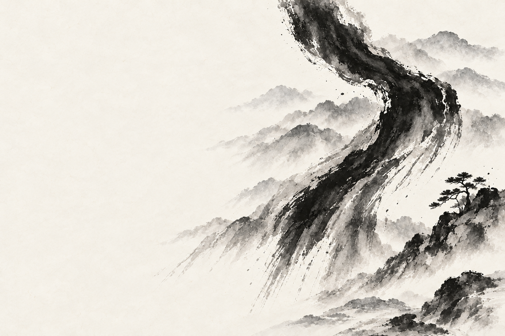

자연스러움
일상 속에서 자연스럽게 사용하는가?

BIG + STORY
디지털 위에 사람의 일상이 자연스럽게 쌓여,
시간이 지나서 의미가 커지는 브랜드.
01 OUR PHILOSOPHY
사람은 스토리를 쓰지 않습니다.
매일 선택하며 살아갑니다.
의식하지 않아도 쌓이는 역사.
그것이 Bixtory입니다.
02 FEEL THE IDEA
기록하려 애쓰지 않아도 괜찮아요.
움직임이 쌓여, 하나의 장면이 됩니다.
당신의 움직임을 남겨보세요.
03 OUR PRINCIPLES
지금 좋아 보이는 것보다,
시간이 지난 뒤 더 의미가 커지는 것.
일상 속에서 자연스럽게 사용하는가?
지금 좋아 보이는 것보다, 시간이 지난 뒤 더 의미가 커지는 것.
사람의 맥락과 시간을 훼손하지 않습니다.
만들어진 세계관이 아닌, 사용자의 경험.
04 BUILT ON TRUST
THE BIXTORY MANIFESTO